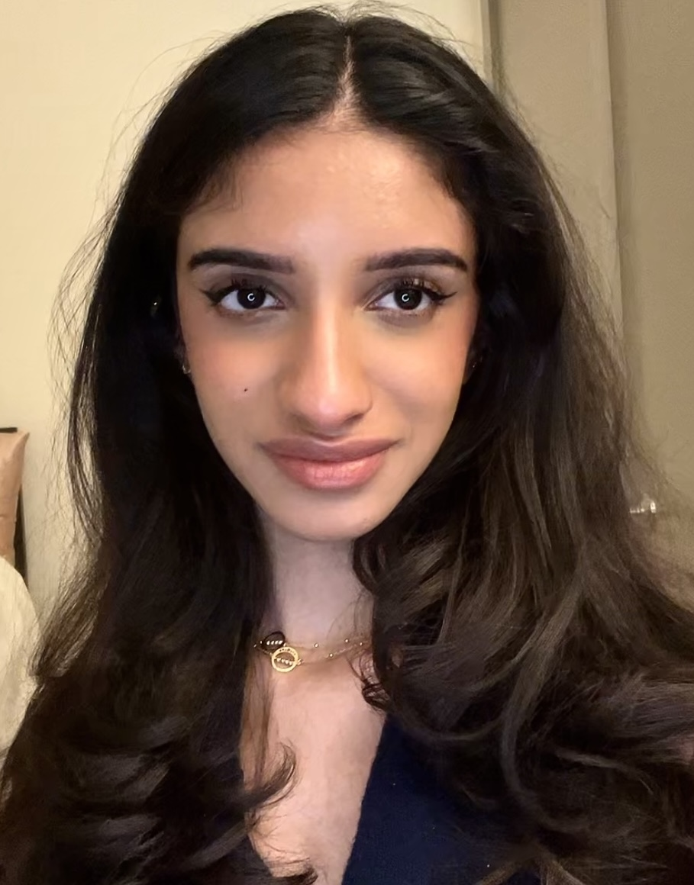
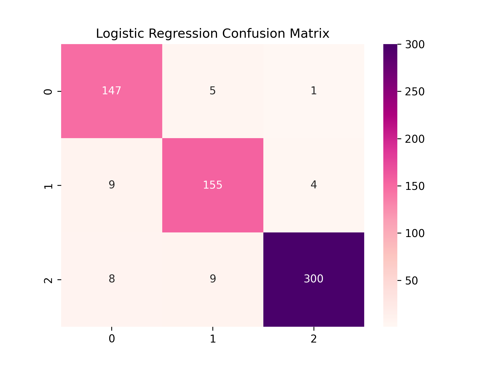

A retro-style 2D dungeon crawler where Aphrodite escapes Cronus’ belly, battles mythic bosses, and rewrites her fate. Inspired by Greek gods, Jonah’s tale, and pixel-perfect chaos.
Play or View Code →

About Me
Hi! I’m Soli Ateefa, a Computer Science student at UTA, exploring the exciting world of bioinformatics. Driven by curiosity and a passion for tech innovation, I’m diving into research that bridges computer science and healthcare. I can’t wait to connect with others who share a vision for impactful tech solutions!
Projects

Aphrodite’s Odyssey
Stereo Depth Estimation on Cryo-EM Slices
Demonstrates depth from stereo pairs of Cryo-EM slices. Features a dynamic disparity GIF showing slice transitions.
View on GitHub →

Biosequence Classifier
A DNA classification pipeline using Logistic Regression, Neural Networks, SHAP, and Ensemble Learning. Visualized with metrics like AUC, cross-validation, and feature impact.
View on GitHub →My Resume
View my resume below or download it to keep a copy.
My Journey
2021
Clinical Research Intern at UTSW
Visualized infant growth data to improve prediction model accuracy by 30%.
2022
Started Computer Science at UTA
Declared Biomedical Engineering minor, joined SWE & Girls Who Code.
2023
Joined Bioinformatics Lab
Conducted vision-based model evaluation using MediaPipe and DL frameworks.
2024
Internship at UTSW
Developed stereo vision depth models for Cryo-EM in Python, FORTRAN, & C++.
2025
Launch Personal Projects
Created Aphrodite’s Odyssey, biosequence classifier, and portfolio website.